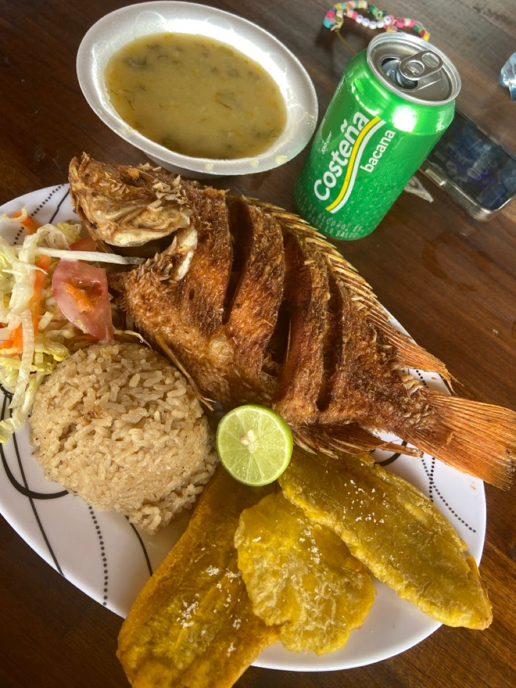
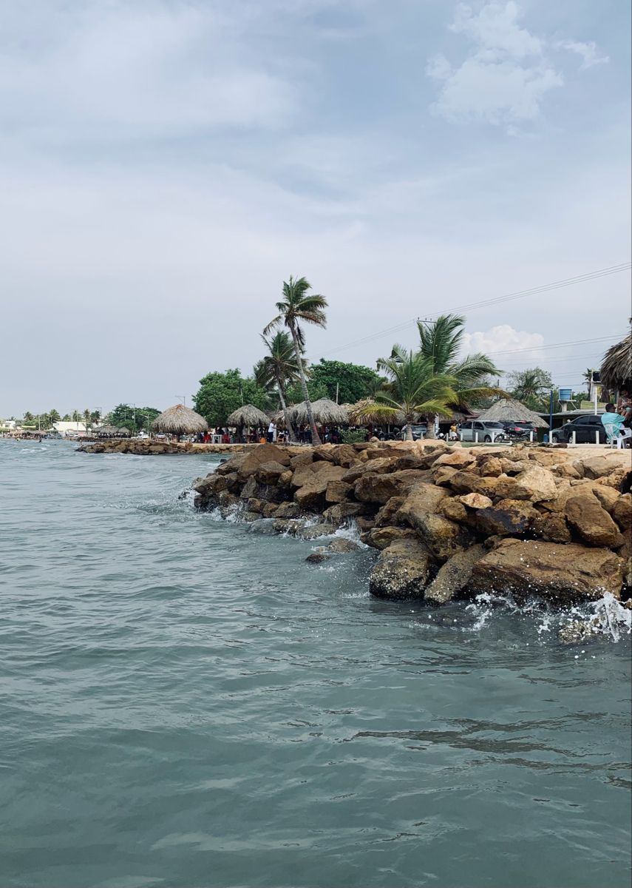
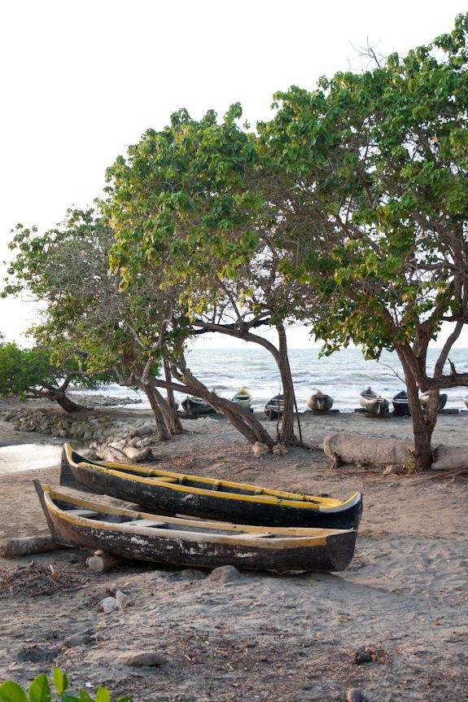

La cultura costeña colombiana representa la alegría, la música, el sabor y las tradiciones del Caribe colombiano. La región Caribe es reconocida por sus carnavales, festivales, playas, gastronomía y música vallenata.
"Los Caminos de la Vida" es una de las canciones más representativas del vallenato colombiano. Esta canción transmite un mensaje sobre las dificultades de la vida y el amor hacia la familia.
Este video muestra una hermosa ciénaga ubicada en San Marcos, Sucre, un lugar representativo de la región Caribe colombiana. Sus paisajes naturales, aguas tranquilas y ambiente tropical reflejan la belleza y riqueza cultural de la costa colombiana. La ciénaga es parte importante de la vida de muchas comunidades, donde la pesca, la naturaleza y las tradiciones hacen parte del día a día.
250 personas les gusta este video
El vallenato y la cumbia representan la identidad cultural del Caribe colombiano.

La comida costeña destaca por sus sabores tropicales, mariscos y platos típicos deliciosos.

Cartagena y Santa Marta poseen playas paradisíacas reconocidas mundialmente.
La región Caribe colombiana está llena de colores, alegría y tradiciones únicas. En esta galería observamos playas tropicales, paisajes hermosos y lugares turísticos representativos de la costa colombiana.
